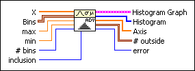
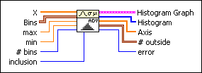
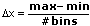
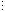
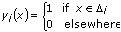
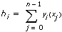

General Histogram VI
Owning Palette: Probability & Statistics VIs
Requires: Full Development System
Finds the discrete histogram of the input sequence X based on the given bin specifications.

 Add to the block diagram Add to the block diagram |
 Find on the palette Find on the palette |
Owning Palette: Probability & Statistics VIs
Requires: Full Development System
Finds the discrete histogram of the input sequence X based on the given bin specifications.

| Add to the block diagram |
Find on the palette |
 |
X represents the input data. | ||||||||||||||
 |
Bins specifies the boundaries of each bin of the histogram. The input Bins is an array of clusters where each cluster defines the range of values for a bin.
| ||||||||||||||
 |
max specifies the maximum value to include in the histogram. LabVIEW ignores this control if the Bins input array is not empty. | ||||||||||||||
|
min specifies the minimum value to include in the histogram. LabVIEW ignores this control if the Bins input array is not empty. | ||||||||||||||
 |
# bins specifies the number of bins in the histogram. # bins is ignored if the Bins input array is not empty. The default behavior is to determine the number of bins according to Sturges' Rule, number of bins = 1 + 3.3log(size of(X)). | ||||||||||||||
 |
inclusion specifies how to handle the boundaries of each bin. If array Bins is not empty, LabVIEW ignores the max, min, # bins, and inclusion inputs.
|
||||||||||||||
 |
Histogram Graph displays the bar graph of the histogram of the input sequence X. The y-axis is the histogram count, and the x-axis is the histogram center values of the intervals (bins) of the histogram. | ||||||||||||||
 |
Histogram specifies the resulting histogram. | ||||||||||||||
 |
Axis specifies the center values for each bin of Histogram. The centers of each bin are set according to the following equation and returned in the output array Axis.
center[i] = (lower + upper)/2, where lower is the lower boundary of bin i, and upper is the upper boundary of bin i. |
||||||||||||||
 |
# outside contains information about points not falling in any bin upon successful execution of the VI.
| ||||||||||||||
 |
error returns any error or warning from the VI. You can wire error to the Error Cluster From Error Code VI to convert the error code or warning into an error cluster. |
The General Histogram VI completes the following steps to obtain the Histogram:
The following equation defines the bin intervals.
 i = (Bins[i].lower: Bins[i].upper) i = 0, 1, 2, ..., k – 1
i = (Bins[i].lower: Bins[i].upper) i = 0, 1, 2, ..., k – 1
where Bins[i].lower is the value lower in the ith cluster of array Bins, Bins[i].upper is the value upper in the ith cluster of array Bins, and k is the number of elements in Bins, which consists of the number of total bins.
Whether the two ending points Bins[i].lower and Bins[i].upper of each bin are included in the bin i depends on the value of inclusion in the corresponding cluster i of Bins.
If Bins is an empty array, the General Histogram VI uses the inputs max, min, and # bins to establish the bins. Each bin width x is the same and calculated with the following equation.

If the Bins array contains elements, the bin widths are determined by the inclusion subparameter of the Bins parameter.
If inclusion is set to lower, the bin widths are determined according to the following equations.
0 = [min: min + x)1 = [min + x:min + 2x)
i = [min + ix:min + (i + 1)x)k – 1 = [min + (k – 1)x:max]
If inclusion is set to upper, the bin widths are determined according to the following equations.
0 = [min:min + x]1 = (min + x:min + 2x]i = (min + ix:min + (i + 1)x]k – 1 = (min + (k – 1)x:max]
 | Note The first start point min and last end point max are always included in the first and last bins. |
The following equation defines the function yi(x).

For example, if x falls into the bin i, then yi(x) = 1.
The General Histogram VI evaluates the histogram sequence H with the following equation.

where H represents the elements of the output sequence Histogram, n is the number of elements in the input sequence X, hi is the total number of points in the input array X that fall into the bin i, i = 0, 1, …, k – 1, and k is the number of bins.
Refer to the Running Histogram VI in the labview\examples\Mathematics\Probability and Statistics directory for an example of using the General Histogram VI.
 Open example Find related examples
Open example Find related examples
 Bins[1].lower < Bins[1].upper, …– < Bins[k – 1].lower, and < Bins[k – 1].upper, where k is the number of elements in Bins.
Bins[1].lower < Bins[1].upper, …– < Bins[k – 1].lower, and < Bins[k – 1].upper, where k is the number of elements in Bins.